Tier-2 ★-Waffen Aktivierung (二級武器活化)
Offizielle Liste der Tier-2-Waffen, die sich in Zero über Activation auf die ★-Stufe heben lassen — mit Patch-Historie (08/2025, 10/2025, 11/2025).
⭐ Worum geht's?
Das Activation-System (活化) hebt ausgewählte Tier-2-Waffen auf die ★-Stufe. Dabei erhalten sie einen neuen Basis-Effekt und werden enchant-fähig — siehe ★-Waffen Random Options für die zugehörigen Abilities.
📜 Update 28.08.2025 — Erste Welle
Diese Waffen wurden zum Launch des Activation-Systems freigegeben.
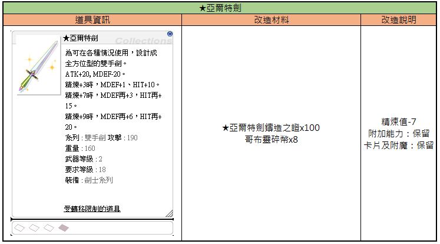
Tabelle mit den Informationen zur Aufrüstung des Aeter Sword in Ragnarok Zero.
| Item-Informationen | Aufrüstungsmaterial | Aufrüstungshinweise |
|---|---|---|
| Aeter Sword: Ein Allzweck-Zweihandschwert für verschiedene Situationen. ATK+20, MDEF-20. Bei Refine +3, MDEF+1, HIT+10. Bei Refine +7, MDEF+3, HIT+15. Bei Refine +9, MDEF+6, HIT+20. Typ: Two-Handed Sword, ATK: 190, Gewicht: 160, Waffenlevel: 2, Benötigtes Level: 18, Klasse: Swordman Class. Artikel mit Transferbeschränkungen. | Aeter Sword Forging Certificate x100, Goblin Shard x8 | Refine-Wert: -7, Zusätzliche Fähigkeiten: Beibehalten, Karten und Enchants: Beibehalten |
Die im Spiel angezeigten Werte beziehen sich auf das Modifikationssystem des Aeter Sword.
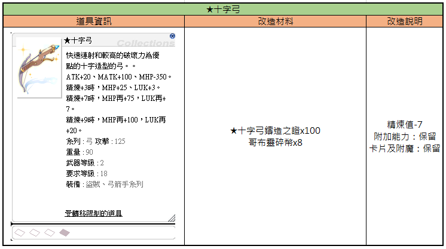
Dies ist ein UI-Fenster, das die Modifikationsdetails und Materialanforderungen für den Gegenstand ★Cross Bow anzeigt.
| Gegenstandsinformation | Modifikationsmaterialien | Modifikationsbeschreibung |
|---|---|---|
| ★Cross Bow Ein bogenförmiger Bogen, der sich durch schnelles Feuern und hohe Zerstörungskraft auszeichnet. ATK+20, MATK+100, MHP-350. Bei Refine +3: MHP+25, LUK+3. Bei Refine +7: MHP+75, LUK+7. Bei Refine +9: MHP+100, LUK+20. Typ: Bow, ATK: 125 Gewicht: 90 Waffen-Level: 2 Benötigtes Level: 18 Klasse: Thief, Archer Class Handelsbeschränkung: Account-gebunden | ★Cross Bow Certificate x100 Goblin Shard x8 | Refine -7 Zusätzliche Fähigkeiten: Beibehalten Karten und Verzauberungen: Beibehalten |
Die Modifikation reduziert das Refinement um 7 Stufen, behält aber existierende Karten und Verzauberungen bei.
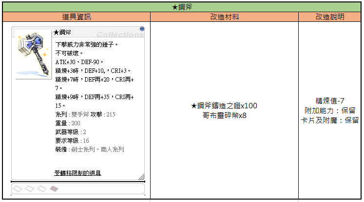
Diese Tabelle beschreibt die Modifikationsanforderungen und Effekte für die 'Steel Axe' in Ragnarok Zero.
| Gegenstandsinformation | Modifikationsmaterialien | Modifikationshinweise |
|---|---|---|
| ★Steel Axe Ein Hammer mit extrem starker Schlagkraft. Unzerstörbar. ATK+30, DEF-90. Refine +3: DEF+10, CRI+3. Refine +7: DEF+20, CRI+7. Refine +9: DEF+35, CRI+15. Typ: Two-Handed Axe, ATK: 215 Gewicht: 200 Waffenlevel: 2 Benötigtes Level: 16 Klasse: Swordman-Klasse, Merchant-Klasse Handel eingeschränkt | ★Steel Axe Casting Certificate x100 Goblin Shard x8 | Refine Level -7 Zusätzliche Fähigkeiten: Beibehalten Karten & Enchants: Beibehalten |
Die Werte für DEF und CRI bei den Refine-Stufen addieren sich jeweils zum vorherigen Wert.
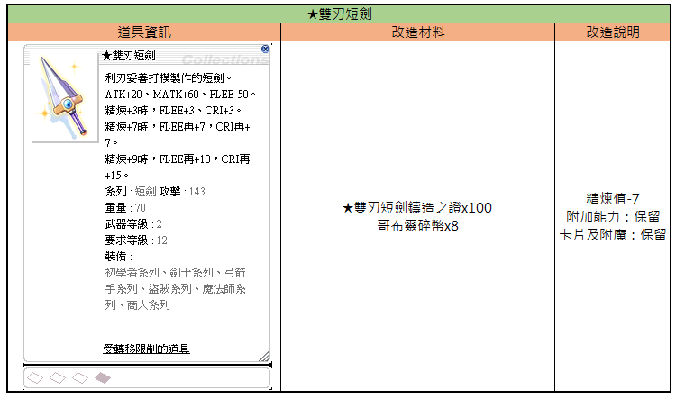
Diese Tabelle zeigt die Modifikationsanforderungen und Bedingungen für das Aufrüsten des ★Dagger of Counter.
| Item-Informationen | Modifikationsmaterialien | Modifikationsbeschreibung |
|---|---|---|
| ★Dagger of Counter: Ein von erfahrenen Schmieden gefertigter Dolch. ATK+20, MATK+60, FLEE-50. Bei Refine +3: FLEE+3, CRIT+3. Bei Refine +7: zusätzlich FLEE+7, CRIT+7. Bei Refine +9: zusätzlich FLEE+10, CRIT+15. Typ: Dagger, Angriff: 143, Gewicht: 70, Waffenlevel: 2, Benötigtes Level: 12, Ausrüstbar durch: Novice, Swordman, Archer, Thief, Mage, Merchant Klassen. Artikel nicht handelbar. | ★Dagger of Counter Casting Proof x100, Goblin Shard x8 | Refine-Wert: -7, Zusätzliche Fähigkeiten: Beibehalten, Karten und Enchants: Beibehalten |
Die Modifikation reduziert den Refine-Wert des Gegenstands um 7, behält jedoch bestehende Karten und Verzauberungen bei.
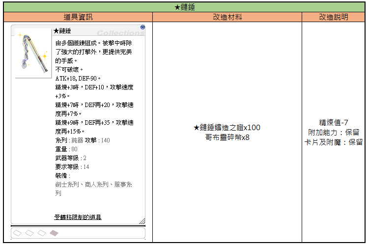
Tabelle mit Informationen über den Gegenstand ★Chain Flail, die notwendigen Veredelungsmaterialien und die Bedingungen für die Modifikation.
| Gegenstandsinformationen | Modifikationsmaterialien | Modifikationsbeschreibung |
|---|---|---|
| ★Chain Flail: Besteht aus mehreren verbundenen Ketten. Neben einem starken Schlaggefühl bietet sie ein perfektes Handling. Unzerstörbar. ATK+18, DEF-90. Bei Refine+3: DEF+10, ASPD+3%. Bei Refine+7: DEF+20, ASPD+7%. Bei Refine+9: DEF+35, ASPD+15%. Typ: Mace, ATK: 140, Gewicht: 80, Waffenlevel: 2, Benötigtes Level: 14, Ausrüstbar von: Swordman Class, Merchant Class, Acolyte Class. Handelsbeschränkung aktiv. | ★Chain Flail Forging Proof x100, Goblin Shard x8 | Refine-Wert: -7, Zusätzliche Fähigkeiten: beibehalten, Karten und Verzauberungen: beibehalten |
Die Werte beziehen sich auf das ★Chain Flail im Ragnarok Zero UI-Format.
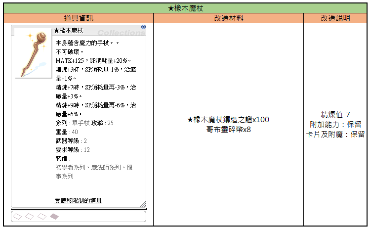
Tabelle mit den Statistiken, Modifikationsmaterialien und Anforderungen für die 'Oak Staff'.
| Item-Informationen | Modifikationsmaterialien | Modifikationsbeschreibung |
|---|---|---|
| Oak Staff: Ein Stab, der magische Kräfte besitzt. Unzerstörbar. MATK+125, SP-Verbrauch +20%. Bei Refine +3: SP-Verbrauch -1%, Heilmenge +1%. Bei Refine +7: SP-Verbrauch weitere -3%, Heilmenge +3%. Bei Refine +9: SP-Verbrauch weitere -6%, Heilmenge +6%. Typ: Einhandstab, Angriff: 25, Gewicht: 40, Waffenstufe: 2, Benötigtes Level: 12, Ausrüstbar durch: Novice-Klasse, Mage-Klasse, Acolyte-Klasse. Handelbare Einschränkungen gelten. | Oak Staff Casting Certificate x100, Goblin Shard x8 | Refine-Wert -7. Zusatzeffekte: Beibehalten. Karten und Verzauberungen: Beibehalten. |
Die im Bild gezeigte 'Oak Staff' kann durch die angegebenen Materialien modifiziert werden, wobei Refine-Level, Karten und Enchants erhalten bleiben.
📜 Update 02.10.2025 — Zweite Welle
Ergänzungen ★書 / ★雙手劍 / ★克羅伊特弓 / ★圓柄馬刀 / ★思麥斯鐵錘 (★ Book, ★ Two-Handed Sword, ★ Crecentia Bow, ★ Rapier, ★ Stunner).
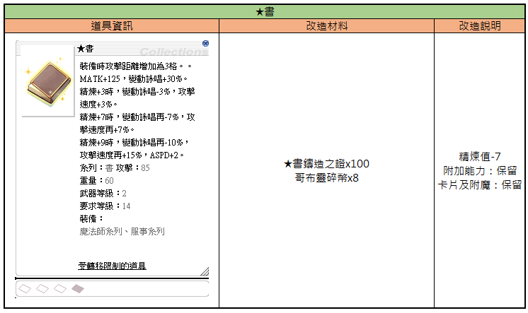
Das Fenster zeigt die Modifikationsdetails für den Gegenstand 'Star Book', inklusive benötigter Materialien und Effektänderungen.
| Gegenstandsinformation | Modifikationsmaterialien | Modifikationsbeschreibung |
|---|---|---|
| Star Book: Erhöht Angriffsreichweite um 3 Zellen. MATK+125, Variable Cast Time +30%. Bei Refine +3: Variable Cast Time -3%, ASPD +3%. Bei Refine +7: Variable Cast Time -7%, ASPD +7%. Bei Refine +9: Variable Cast Time -10%, ASPD +15%, ASPD+2. Typ: Buch, ATK: 85, Gewicht: 60, Waffenlevel: 2, Benötigtes Level: 14, Ausrüstbar durch: Mage classes, Acolyte classes. Gegenstand kann nicht gehandelt werden. | Star Book Casting Proof x100, Goblin Shard x8 | Refine -7. Zusätzliche Effekte: Beibehalten. Karten und Verzauberungen: Beibehalten. |
Die im Spiel angezeigte Übersetzung für '星書' wurde als 'Star Book' interpretiert.
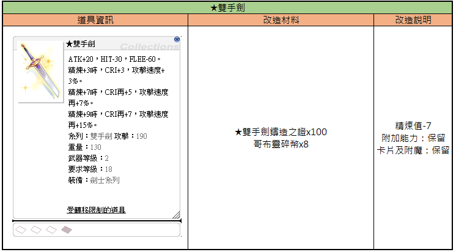
Diese Tabelle zeigt die Item-Daten, erforderlichen Materialien und Bedingungen für die Verbesserung des ★Two-Handed Sword in Ragnarok Zero.
| Item-Informationen | Verbesserungsmaterialien | Verbesserungshinweise |
|---|---|---|
| ★Two-Handed Sword: ATK+20, HIT-30, FLEE-60. Bei Refine +3: CRI+3, ASPD+3%. Bei Refine +7: zusätzlich CRI+5, ASPD+7%. Bei Refine +9: zusätzlich CRI+7, ASPD+15%. Typ: Two-Handed Sword, ATK: 190, Gewicht: 130, Waffenlevel: 2, Benötigtes Level: 18, Ausrüstbar von: Swordsman-Klasse. (Account-gebunden) | ★Two-Handed Sword Certificate x100, Goblin Shard x8 | Refine-Wert: -7. Zusätzliche Boni: Beibehalten. Karten und Enchants: Beibehalten. |
Das Item '★Two-Handed Sword' verliert beim Upgrade 7 Refine-Stufen, behält aber Karten und zusätzliche Effekte bei.
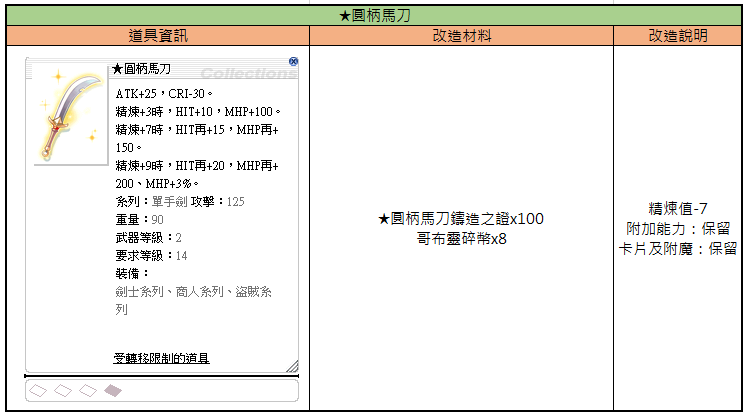
Tabelle mit Informationen zur Modifikation des Gegenstands ★Round-Hilted Scimitar, einschließlich benötigter Materialien und Erklärungen zum Prozess.
| Gegenstandsinformationen | Modifikationsmaterialien | Modifikationserklärung |
|---|---|---|
| ★Round-Hilted Scimitar ATK+25, CRI-30. Refine +3: HIT+10, MHP+100. Refine +7: HIT+15, MHP+150. Refine +9: HIT+20, MHP+200, MHP+3%. Typ: One-Handed Sword, ATK: 125 Gewicht: 90 Waffenstufe: 2 Benötigtes Level: 14 Klasse: Swordman Class, Merchant Class, Thief Class Nicht handelbarer Gegenstand | ★Round-Hilted Scimitar Certificate x100 Goblin Shard x8 | Refinewert -7 Zusätzliche Eigenschaften: Beibehalten Karten und Verzauberungen: Beibehalten |
Die Tabelle beschreibt die Anforderungen und Effekte bei der Modifikation des ★Round-Hilted Scimitar in Ragnarok Zero.
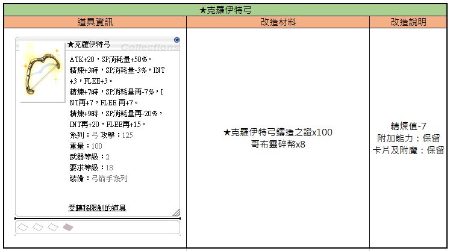
Diese Tabelle zeigt die Gegenstandswerte, die für das Upgrade benötigten Materialien und die resultierenden Modifikationsdetails für den ★Krem Bow.
| Gegenstandsinformationen | Upgrade-Materialien | Upgrade-Beschreibung |
|---|---|---|
| ★Krem Bow ATK+20, SP-Verbrauch +50%. Bei Refine +3: SP-Verbrauch -3%, INT +3, FLEE +3. Bei Refine +7: SP-Verbrauch zusätzlich -7%, INT zusätzlich +7, FLEE zusätzlich +7. Bei Refine +9: SP-Verbrauch zusätzlich -20%, INT zusätzlich +20, FLEE zusätzlich +15. Kategorie: Bogen, Angriff: 125 Gewicht: 100 Waffenlevel: 2 Benötigtes Level: 18 Klasse: Archer-Klasse Gegenstand kann nicht gehandelt werden | ★Krem Bow Forging Certificate x100 Goblin Shard x8 | Refine-Wert -7 Zusatzfähigkeiten: Behalten Karten und Verzauberungen: Behalten |
Die im Spiel angezeigten Werte beziehen sich auf die Spezial-Version des Bogens.
Tabelle mit Informationen über die 'Star Smith's Hammer' Waffe, ihre Upgrade-Anforderungen und die Auswirkungen der Veredelung.
| Item-Informationen | Upgrade-Materialien | Upgrade-Beschreibung |
|---|---|---|
| ★Star Smith's Hammer: ATK+20, HIT-60. Bei Refine +3: HIT+3, INT+1, DEX+1. Bei Refine +7: HIT+7, INT+1, DEX+1, LUK+1. Bei Refine +9: HIT+10, INT+1, DEX+2, LUK+2. Typ: Mace, ATK: 100, Gewicht: 100, Waffenlevel: 2, Benötigtes Level: 14, Ausrüstbar von: Merchant-Klasse. Item nicht handelbar. | ★Star Smith's Hammer Certificate x100, Goblin Shard x8 | Refine-Wert -7. Zusätzliche Boni: Behalten. Karten und Verzauberungen: Behalten. |
Die Tabelle zeigt die spezifischen Boni des Star Smith's Hammer bei verschiedenen Refine-Stufen sowie die Kosten und Bedingungen für die Aufwertung.
📜 Update 27.11.2025 — Dritte Welle
Ergänzungen ★拳刃 / ★破刃長戟 / ★彎刃長矛 / ★賀勒拳套 / ★魯特琴 / ★鋼鐵鞭子 (★ Fist Blade, ★ Halberd, ★ Curved Spear, ★ Knuckle, ★ Lute, ★ Steel Whip).
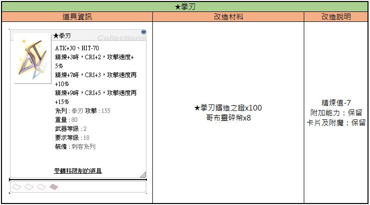
Tabelle mit Informationen zur Modifikation des Gegenstands 'Katar' (Katar), einschließlich benötigter Materialien und Auswirkungen.
| Gegenstandsinformationen | Modifikationsmaterialien | Modifikationshinweise |
|---|---|---|
| Katar (Katar) ATK+30, HIT-70. Refine+3: CRI+2, ASPD+5%. Refine+7: CRI+3, additional ASPD+10%. Refine+9: CRI+5, additional ASPD+15%. Typ: Katar, ATK: 155, Gewicht: 80, Waffenlevel: 2, Benötigtes Level: 18, Ausrüstung: Assassin Class. Nicht handelbarer Gegenstand. | Katar Forging Certificate x100, Goblin Shard x8 | Refine-7. Zusätzliche Boni: Beibehalten. Karten und Verzauberungen: Beibehalten. |
Die Tabelle zeigt die spezifischen Boni, die durch das Verbessern der 'Katar'-Waffe erreicht werden, sowie die Kosten für den Modifikationsprozess.
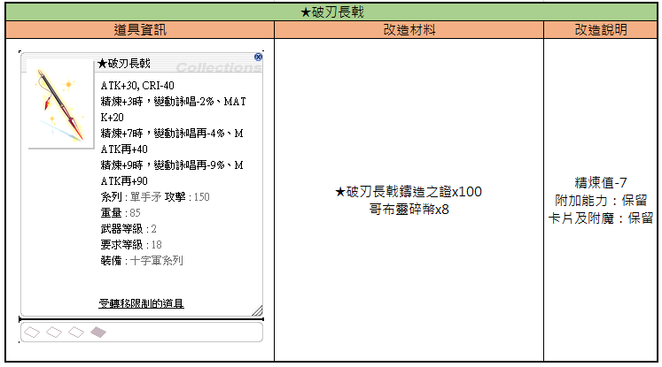
Tabelle mit Informationen zur Verbesserung des Ausrüstungsgegenstands ★Speer-Lanze (engl. ★Blade Spear).
| Gegenstandsinformationen | Verbesserungsmaterialien | Verbesserungshinweise |
|---|---|---|
| ★Blade Spear ATK+30, CRI-40 Refine +3: Variable Cast Time -2%, MATK+20 Refine +7: Variable Cast Time -4%, MATK+40 Refine +9: Variable Cast Time -9%, MATK+90 Typ: One-Handed Spear, ATK: 150 Gewicht: 85 Waffenstufe: 2 Benötigtes Level: 18 Ausrüstbar für: Crusader Class Eingeschränkter Handel | ★Blade Spear Certificate x100 Goblin Shard x8 | Refine value -7 Zusatzboni: beibehalten Karten und Enchants: beibehalten |
Die Werte beziehen sich auf die Modifikation der ★Blade Spear im Spiel Ragnarok Zero.
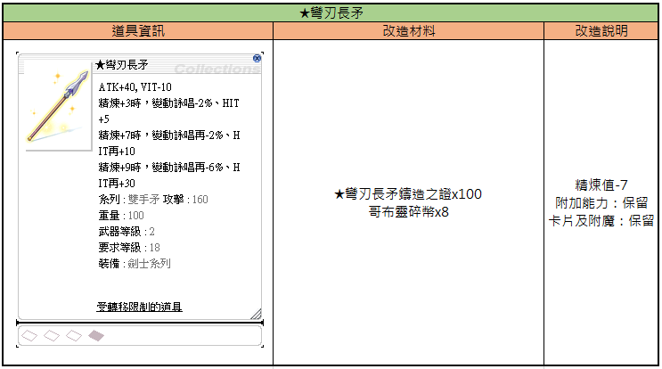
Tabelle mit den Informationen zur Aufrüstung der Waffe 'Crescent Spear' (★彎刃長矛) in Ragnarok Zero.
| Item-Informationen | Umwandlungsmaterialien | Umwandlungsbeschreibung |
|---|---|---|
| ★Crescent Spear (★彎刃長矛): ATK+40, VIT-10. Bei Refine+3: Variable Cast Time -2%, HIT +5. Bei Refine+7: Variable Cast Time -2% zusätzlich, HIT +10 zusätzlich. Bei Refine+9: Variable Cast Time -6% zusätzlich, HIT +30 zusätzlich. Typ: Two-Handed Spear, ATK: 160, Gewicht: 100, Waffen-Level: 2, Benötigtes Level: 18, Klasse: Swordman-Klasse. Status: Nicht handelbar. | ★Crescent Spear Casting Certificate x100, Goblin Shard x8 | Refine-Wert -7, Boni bleiben erhalten, Karten und Enchants bleiben erhalten |
Die im Feld 'Item-Informationen' genannten Boni beziehen sich auf den modifizierten Status der Waffe.
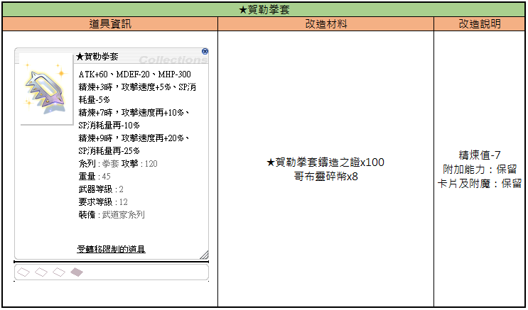
Eine Tabelle, die die Anforderungen und Modifikationen für das Upgrade des Gegenstands 'Glorious Knuckle' in Ragnarok Zero zeigt.
| Gegenstandsinformationen | Upgrade-Materialien | Upgrade-Beschreibung |
|---|---|---|
| Glorious Knuckle ATK+60, MDEF-20, MHP-300 Refine +3: ASPD+5%, SP-Verbrauch-5% Refine +7: ASPD+10%, SP-Verbrauch-10% Refine +9: ASPD+20%, SP-Verbrauch-25% Typ: Knuckle ATK: 120 Gewicht: 45 Waffenstufe: 2 Benötigtes Level: 12 Klasse: Taekwon-Klasse Handel eingeschränkt | Glorious Knuckle Certificate x100 Goblin Shard x8 | Refine-Wert -7 Zusätzliche Fähigkeiten: beibehalten Karten & Enchants: beibehalten |
Die im Spiel angezeigten Werte beziehen sich auf das Upgrade-Interface für den Gegenstand 'Glorious Knuckle'.
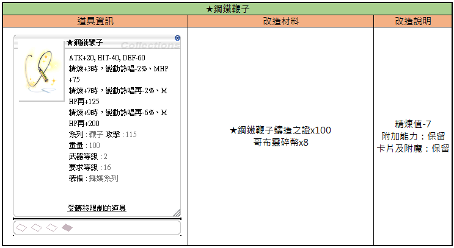
Tabelle mit Informationen zum Gegenstand ★Steel Whip, einschließlich der erforderlichen Materialien für die Aufrüstung und der Beschreibung des Modifikationsprozesses.
| Gegenstandsinformationen | Aufrüstungsmaterialien | Aufrüstungsbeschreibung |
|---|---|---|
| ★Steel Whip: ATK+20, HIT-40, DEF-60. Bei Refine +3: Variable Cast Time -2%, MHP+75. Bei Refine +7: Variable Cast Time -2%, MHP+125. Bei Refine +9: Variable Cast Time -6%, MHP+200. Typ: Whip, ATK: 115, Gewicht: 100, Waffenstufe: 2, Benötigtes Level: 16, Ausrüstbar durch: Dancer Class. Gegenstand ist nicht handelbar. | ★Steel Whip Forge Proof x100, Goblin Shard x8 | Refine -7, Boni bleiben erhalten, Karten und Enchantments bleiben erhalten |
Die Angaben beziehen sich auf das Aufrüstungssystem von Ragnarok Zero. 'Variable Cast Time' bezieht sich auf die Reduzierung der variablen Zauberzeit.
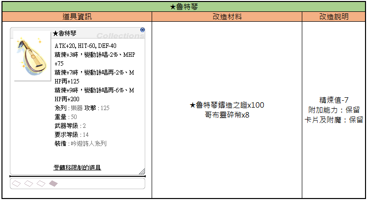
Tabelle mit Informationen zur Modifikation des Gegenstands ★Lute (Ragnarok Zero).
| Gegenstandsinformationen | Modifikationsmaterialien | Modifikationsbeschreibung |
|---|---|---|
| ★Lute ATK+20, HIT-60, DEF-40; Refine +3: Variable Cast Time -2%, MHP +75; Refine +7: Variable Cast Time -2%, MHP +125; Refine +9: Variable Cast Time -6%, MHP +200; Typ: Musical Instrument, ATK: 125, Gewicht: 50, Waffenlevel: 2, Benötigtes Level: 14, Ausrüstbar durch: Bard/Dancer-Klasse; Gegenstand kann nicht gehandelt werden | ★Lute Forging Proof x100, Goblin Shard x8 | Refine -7, Zusatzeffekte: Beibehalten, Karten und Verzauberungen: Beibehalten |
Die Tabelle beschreibt die Anforderungen und das Ergebnis einer Gegenstandstransformation für die ★Lute.
🧪 Verwendbare Enchant-Items
⚠️ Hinweise
- Items & Bonuswerte richten sich nach den In-Game-Einstellungen.
- Änderungen oder Ergänzungen stets auf der Originalseite prüfen.